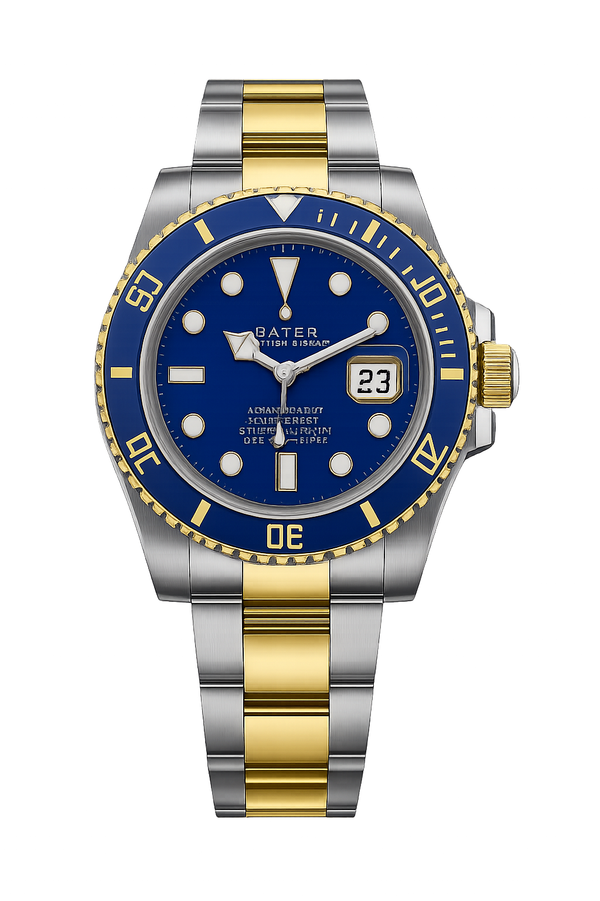

Rolex Submariner Elegancia y Precisión
El Rolex Submariner es un ícono de la relojería suiza. Su diseño atemporal combina lujo y funcionalidad, perfecto para quienes buscan estilo y rendimiento. Fabricado con acero inoxidable de alta resistencia, cuenta con un bisel giratorio unidireccional y una resistencia al agua de hasta 300 metros, ideal tanto para el buceo como para la vida diaria.
Mas Informacion¿Por qué elegir nuestro reloj?
El Rolex Submariner combina elegancia, precisión y resistencia. Diseñado para quienes buscan más que un simple accesorio, este reloj representa lujo, estilo y durabilidad. Cada detalle refleja artesanía suiza y tecnología de alta gama, convirtiéndolo en una inversión que trasciende generaciones.
Calidad Inigualable
Fabricado con materiales de primera calidad para garantizar durabilidad y resistencia.
Diseño Atemporal
Un diseño clásico que nunca pasa de moda, perfecto para cualquier ocasión.
Precisión Suiza
Movimiento automático certificado por COSC, garantizando exactitud y fiabilidad.